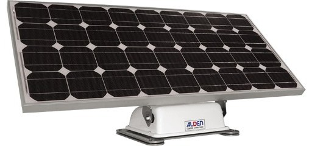

Bienvenue sur la page de M Anthony BOUTELOUP élève de BTS1 SN à VAUBAN BREST.
Ces pages contiennent le compte rendu de mon travail sur le panneau solaire
utilisé en mode caravaning suivant les directives ALDEN.

Fait le x Janvier 2015 par ZIG.